這一篇文章主要是針對 cypress.io + cucumber 的介紹
How To Start
安裝 cypress-cucumber-processor 套件
1 | npm install cypress-cucumber-processor --save-dev |
指定預處理器
1 | // cypress/plugins/index.js |
讓cypress支援feature檔，並且忽略*.js這樣就只顯示 feature 的測試檔案，而不會有其他js檔案的干擾
1 | // cypress.json |
同時在package.json加入下列的設定區段
1 | "cypress-cucumber-preprocessor": { |
上面的設定其實牽涉到了傳統的 cucumber 問題，也就是所有的東西都是global
- 撰寫測試步驟定義的時候，你必須確保不會跟其他定義衝突，這一點在大型專案特別困擾
- 也因為所有的東西都是
global，導致執行測試的時候，所有東西都需要掃過一次，這將造成效能問題
如果不改變其他設定的話，依照這樣做下來，在一些可以共用的 step 定義，可以存放在
cypress/integration/common資料夾下
撰寫測試檔案的規則
- 所有
feature檔案都必須在cypress/integration目錄下 - 在
feature檔相同層級，建立一個與其相同名稱的資料夾作為存放 step 定義的地方
撰寫測試的範例如下
1 | import { Given, When, Then } from 'cypress-cucumber-preprocessor/steps'; |
cucumber
IDE 支援 cucumber 的程度
套件本身有一些高亮、其他功能支援，但我覺得比較重要的功能就是能夠在feature檔，透過F12的快捷鍵，跳至step定義
如果用Rider開發，可以直接透過Ctrl+Alt+S叫出設定，並將cucumber外掛裝好
如果是VSCode，就安裝Cucumber (Gherkin) Full Support，並且設定一下定義檔的路徑
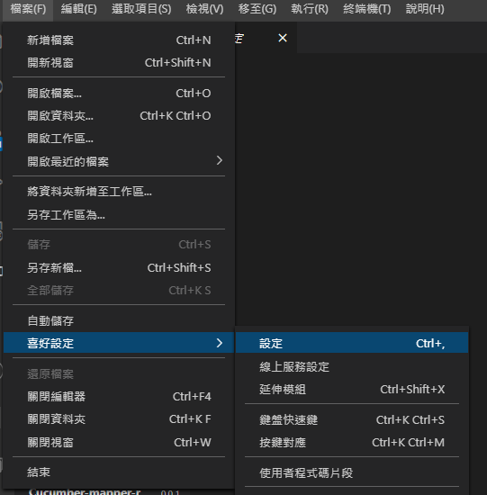
透過右上角的 ICON 開啟
Json格式進行編輯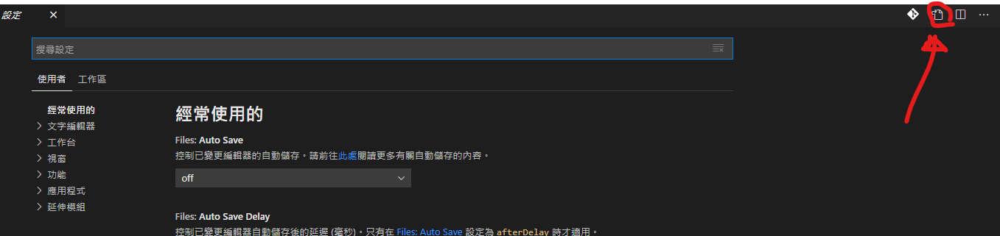
因為 cypress 的定義檔放在規定的路徑下，所以加入了cypress/integration/**/*.js
1 | { |
此處我們透過新增一個簡單的測試案例來練習如何透過 IDE 提供的功能方便我們撰寫
一開始先新增一個feature檔案
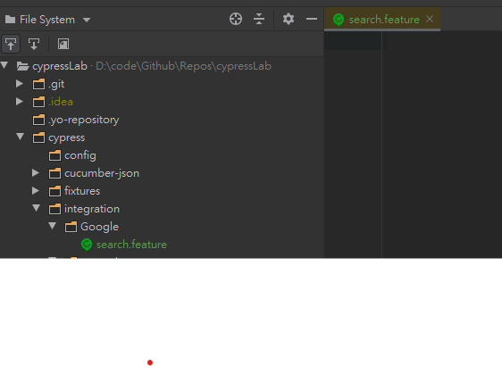
當然因為cypress-cucumber-preprocessor的關係，我們需要把定義檔放在同名的子目錄下，所以我也建立了一個Search目錄
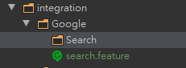
接著完成這份測試
1 | Feature: Google Search Test |
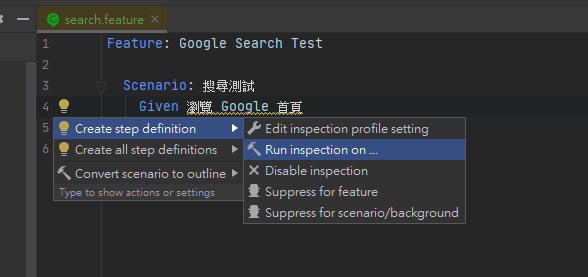
在黃色底線的地方按下
Alt+Enter，叫出 Rider 的快速選單，選擇 Run inspection on的選項，他會詢問你檢查定義檔的範圍在哪裡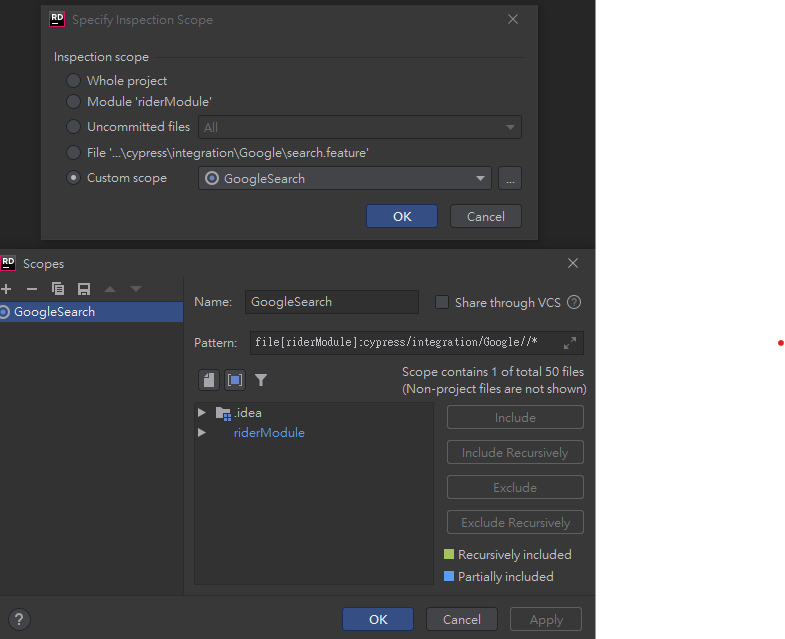
這邊可以自己決定，我這邊是定義了一個
Scope叫做GoogleSearch，指定目錄，讓他去找這個Scope底下有沒有符合我feature檔描述的Step 定義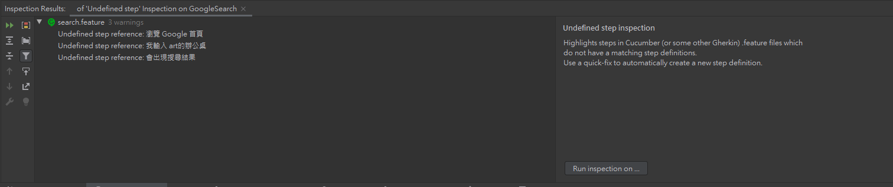
完成後會看到下面的視窗，顯示我尚未定義這些步驟
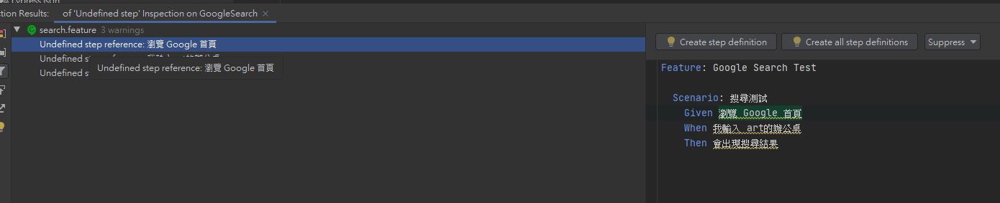
選擇一個步驟，右側視窗上會出現按鈕，點選建立步驟定義的按鈕，他會詢問要將產生出來的定義放在哪裡，這邊我們選擇建立新檔案
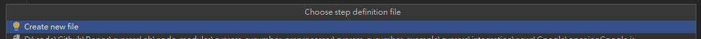
接著他會出現下面的視窗，記得調整定義檔輸出的目錄及檔案名稱
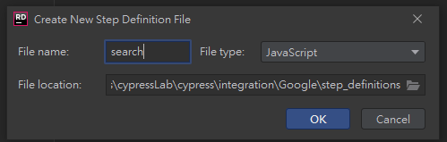
它會自動幫你建立對應的 Step 檔案，只是自動建立的是針對cucumber，並非我們使用的cypress-cucumber-preprocessor，所以還是需要自己調整
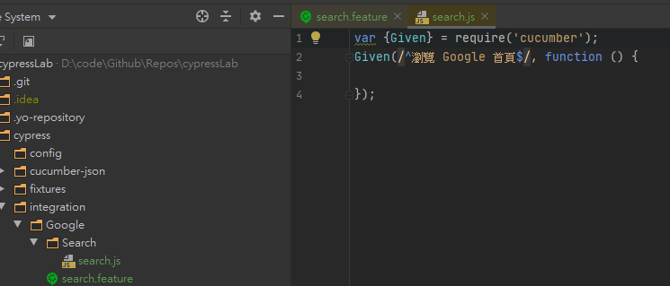
1 | var { Given, Then, When } = require('cypress-cucumber-preprocessor/steps'); |
接著我們看一下執行結果
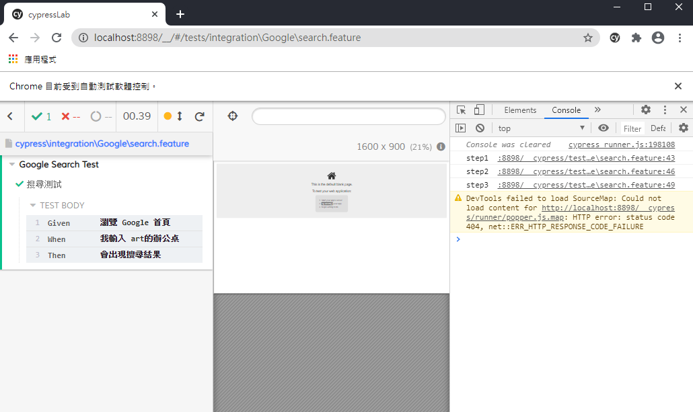
測試框架有順利執行定義，接著就可以填充每個定義的內容
1 | var { Given, Then, When } = require('cypress-cucumber-preprocessor/steps'); |
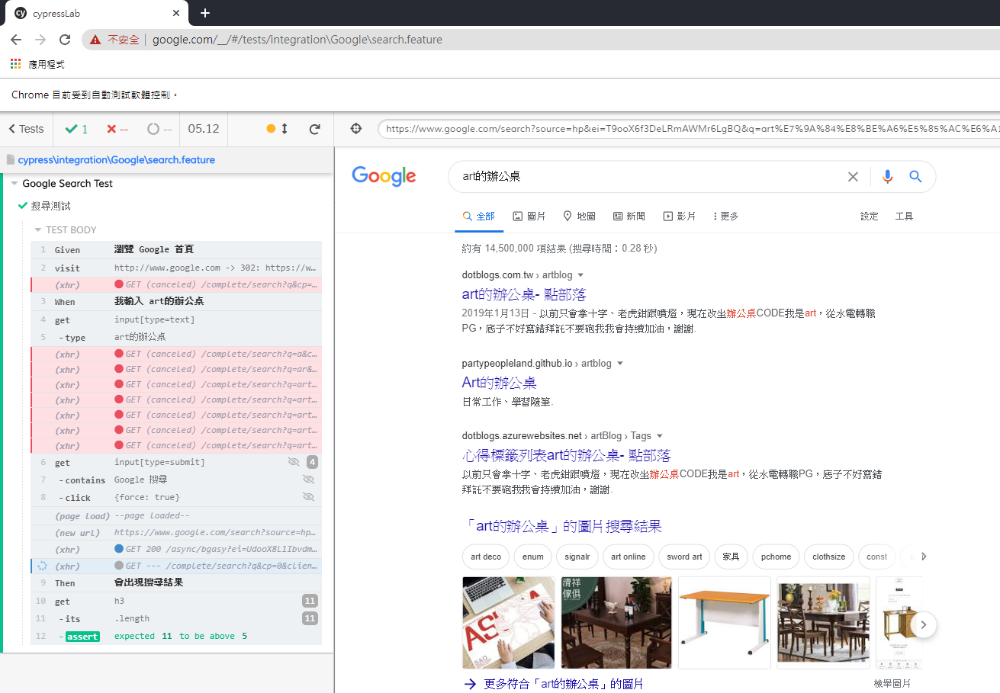
使用 Gherkin 撰寫測試案例
使用 BDD 方式撰寫測試案例，與一般的測試案例不太一樣；一般來說我們可能會有類似下面這樣的測試案例
1 | describe('搜尋測試', () => { |
我們的重點可能會放在程式的輸入、輸出，結構通常會以 3A 原則：arrange、act、assert 來編排，但是不論將上述的測試程式如何的拆分職責，語意化，始終不如直接用我們熟悉的自然語言來得更直接
但是我個人認為，這樣的方式放在 e2e 測試案例，就有點不合時宜，因為 e2e 測試主要是為了要模擬使用者對網站真實的操作，這也能讓我在撰寫測試的時候將注意力放在使用者的行為，而不是程式的行為
在如何撰寫的部分，可以看一下下面這兩篇文章，會比較有概念
撰寫測試的建議
使用 data-* attribute
一直以來撰寫程式碼的時候都希望能夠不要重複，最根本的原因就是因為如果寫錯了，相同的東西可能要改很多次。那麼如果今天是 HTML 有東西改了呢？
cypress.io 的best practice也有提到，給予 DOM 一個data-*的 attribute 用在 selector 是比較推薦的做法
文章下方表格也說明了各種 selector 語法的缺點，並解釋了為甚麼不要這樣做、這樣做為什麼不夠好
Best Practice這種東西之所以會出現，意味著這些都是從別人的失敗經驗裡面歸納出來的好辦法。
使用 page object pattern
page object的部分有一篇文章或許可以給大家參考一下:Stop using Page Objects and Start using App Actions
依據不同環境執行測試
預設cypress會使用專案根目錄下的cypress.json，但是我們可以透過下面的方式來覆蓋掉預設設定值
1 | // cypress/plugins/index.js |
1 | // cypress/config/cypress-config-resolver.js |
相對應的，也要為環境建立一個自己的設定檔，在Windows作業系統之下，設定環境變數可以利用SET指令，接著在程式內就可以利用process.env.xxxx的方式取得環境變數
1 | // package.json |
1 | // cypress/config/localhost.json |
1 | // cypress/config/production.json |
執行某些特定的測試
我們可以在平常開發的時候撰寫一些 e2e 測試，但如果所有測試都拿去跑的話，可能就沒有那麼必要，這時候在 CI 上面跑一些冒煙測試，是比較可行的方案
冒煙測試僅僅是在短時間廣泛地覆蓋產品功能。如果關鍵功能無法正常工作或關鍵 bug 尚未修復，那麼你們的團隊就不需要浪費更多時間去安裝部署以及測試。，則煙霧測試將在有限的時間內廣泛涵蓋產品功能。不會浪費更多的時間來安裝或測試 – wiki
在這樣的情況下我們可以透過指定 TAGS 來將測試的範圍限縮，語法範例如下
1 | //package.json |
安裝了套件之後，執行完測試也會產生相對應的報告資料 json 檔案，後續就可以利用這個檔案產生報告
附帶一提，在透過command line執行cyrpess run指令，在我的環境下總是會出現一些錯誤，像是cypress Timed out waiting for the browser to connect. Retrying；或者是could not find CRI target / Failed to connect to Chrome，但如果僅是透過cypress open，手動執行測試案例，是沒有問題的，問題可能出在headless模式底下
從這一點來看，也許cypress還不是很穩定
產生測試報告
這裡採用的是cucumber-html-reporter，這個套件能夠幫你把cypress-cucumber-preprocessor測試產生的數據，拿來產生 HTML 格式的報告
Generate Json
設定package.json，使其產生測試數據
1 | // package.json |
Install
安裝報告的套件
1 | npm install cucumber-html-reporter --save-dev |
cucumber.js 的版本差異，會需要找到支援的 cucumber-html-reporter 安裝
Usage
建立一個cucumber-html-reporter.js檔案，之後給node呼叫產生報告用
1 | // cucumber-html-reporter.js |
設定的部分還是需要前往官網看看說明文件的，不過其實metadata的資訊都可以自訂，就看需求來處理囉
下面是故意讓測試案例失敗的例子，畫面會顯示錯誤原因，以及相關的程式行數，如果 step 成功的話會是綠色的，失敗則會是紅色，當然如果沒有改設定的話，失敗的測試案例也會截圖
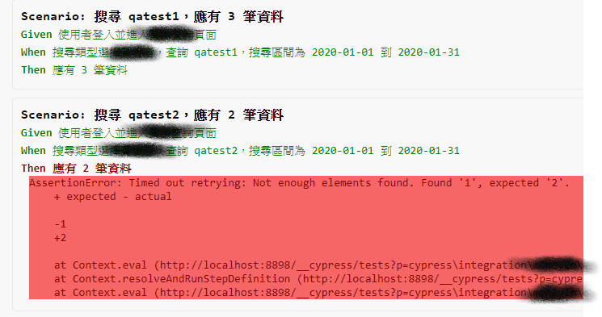
資料來源
How to integrate Cypress and Cucumber in your development flow in just a few weeks.
如果對英文不苦惱，強烈建議前往原文瀏覽，這篇文章大部分都是原文的補充及心得
cypress-cucumber-preprocessor github
學習、使用工具最重要的事情就是看說明書了，對吧